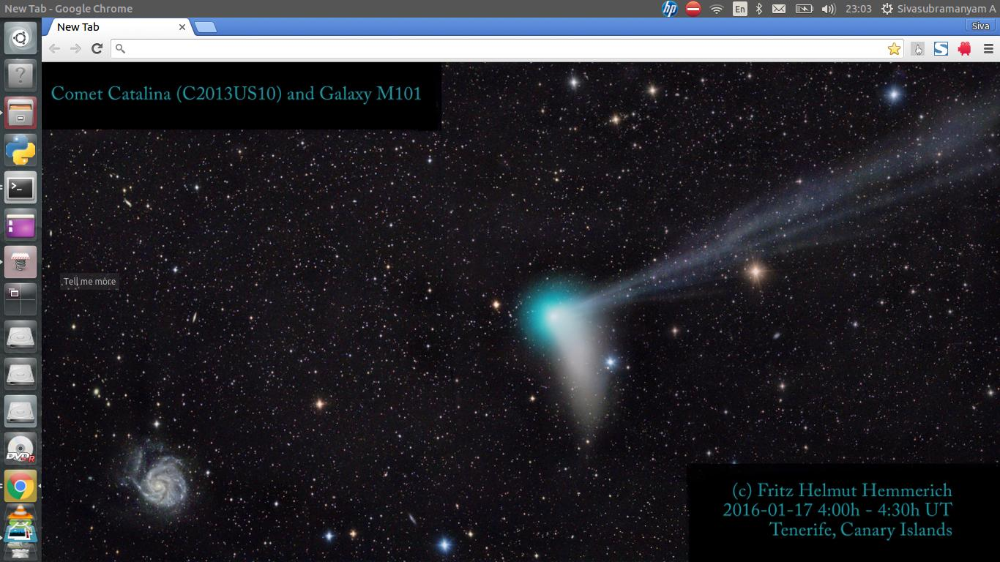
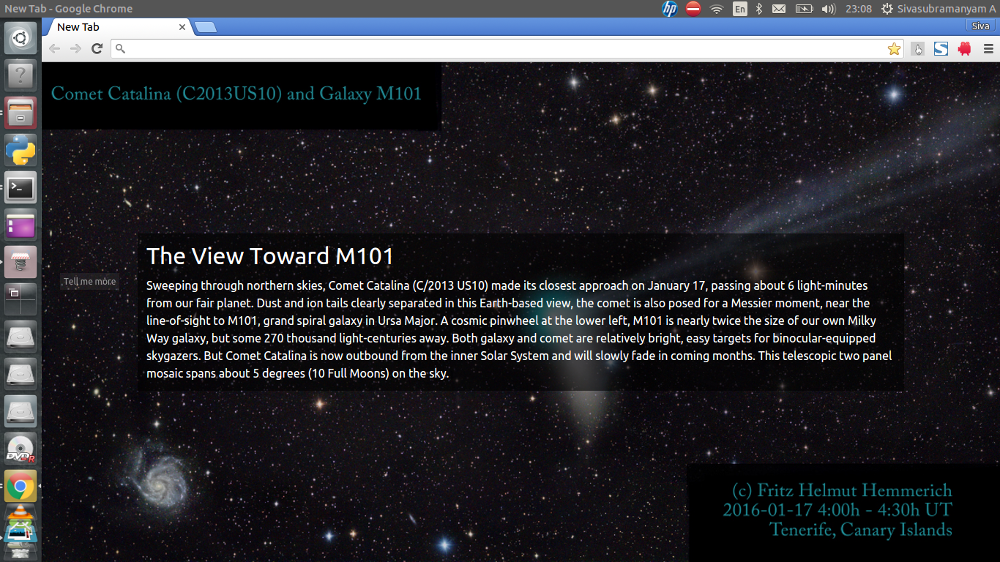
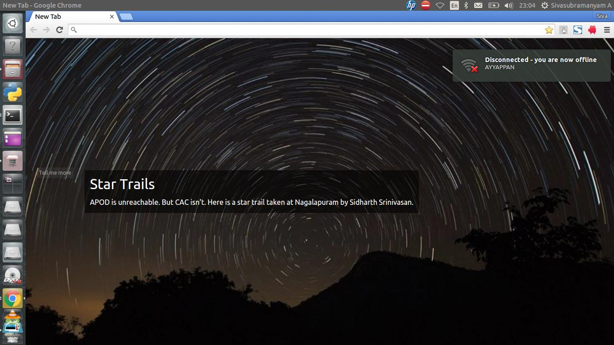

chromapod
Let's put some space in your new tabs!
Fetches the current day's APOD image and sets it as the new tab window's background.
To install,
- Download the extension as a zip file.
- Extract its contents in a directory of your choice.
- Visit chrome://extensions.
- Verify that the Developer mode checkbox is checked.
- Click on Load unpacked extension.
- Navigate to the directory where the zip file's contents were extracted and click on Open.



All images copyright of their original owners.